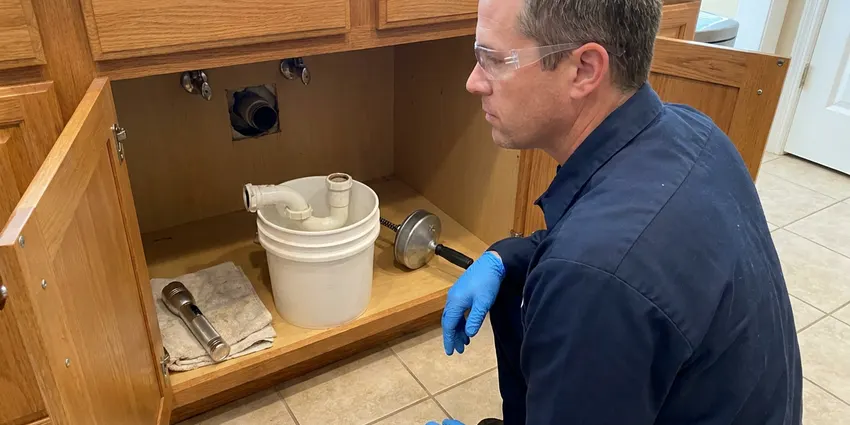

Sump Pump Maintenance in Bryan, TX
Don't wait for a flood to discover a problem. DFJ Plumbing provides comprehensive sump pump maintenance in Bryan, TX, keeping your basement or crawl space dry.
- Fast, Same-Day Service
- Expert Texas Plumbers
- Upfront Pricing
- Guaranteed Work

Schedule Your Sump Pump Check-Up in Bryan, TX.
Contact DFJ Plumbing today to ensure your sump pump is ready for heavy rains and potential flooding.
Essential Sump Pump Maintenance for Your Bryan, TX Home
At DFJ Plumbing, we understand the importance of a reliable sump pump in Bryan, TX. Our maintenance checks are designed to identify potential issues early, ensuring your system operates efficiently when you need it most, especially during heavy rain seasons.
Our expertise includes:
- Inspect float switches and check valve
- Clear debris from pit and impeller
- Test discharge pipe flow and connections

Additional Plumbing Maintenance Services in Bryan, TX
Our maintenance and specialty plumbing services in Bryan, TX catch small problems before they become emergencies.


Customers
Why Choose DFJ Plumbing for Sump Pump Maintenance in Bryan, TX?
Regular sump pump maintenance is not just a suggestion, it's a necessity for many Bryan homes to prevent significant water damage. Our detailed inspections and tune-ups ensure your system is always prepared.
- Prevent Flooding, A well-maintained sump pump is your first line of defense against basement or crawl space flooding, especially common in areas with clay soil like parts of Texas.
- Extend Lifespan, Regular checks prevent wear and tear, reducing strain on components and significantly extending the operational life of your sump pump.
- Save Money, Preventative maintenance is far less expensive than emergency repairs for a broken pump or, worse, extensive water damage restoration.
Citywide Coverage
From residential areas to commercial properties, our team provides comprehensive sump pump maintenance services throughout Bryan. We understand the local needs and are committed to keeping your property dry and protected.
Experienced Team
Our team of licensed plumbers has extensive experience with all types and brands of sump pumps, specifically in the unique challenges posed by Texas's climate. They undergo continuous training to stay current with the latest pump technologies and maintenance techniques.
Safety-First Approach
When working with sump pumps, especially around water and electricity, safety cannot be overlooked. DFJ Plumbing technicians follow strict protocols to protect your home and themselves, providing compliant and secure maintenance every time in Bryan, TX.
Trusted Certified Bryan Plumbing Services Professionals
At DFJ Plumbing, we take pride in providing certified plumbing services throughout Bryan, TX. Backed by recognized industry credentials, our experienced plumbers combine technical skill with genuine customer care. Whether it is repair, installation, or maintenance, we follow strict safety and quality standards to deliver long-lasting results you can trust.
Call Us Now PHCC Plumbing Contractor Recognition
PHCC Plumbing Contractor Recognition Better Business Bureau (BBB) Accreditation
Better Business Bureau (BBB) Accreditation Angi Certified Pro
Angi Certified Pro ISO 9001 Quality Management Certification
ISO 9001 Quality Management CertificationDependable Sump Pump Maintenance Services in Bryan, TX
Residential Sump Pump Maintenance in Bryan
DFJ Plumbing offers tailored maintenance plans for residential sump pumps in Bryan. Our service includes inspecting the pit for debris, checking the float switch for proper operation, and testing the pump's discharge and check valve. We ensure your pump is clean, lubricated, and ready to handle any groundwater, protecting your home's foundation from the expansive clay soils common in Texas.

Pedestal Sump Pump Check-Ups in Bryan, TX
For homes equipped with pedestal sump pumps, DFJ Plumbing provides specialized maintenance services in Bryan, TX. We focus on inspecting the external motor, ensuring proper lubrication, and checking the impeller for any obstructions. This type of pump, with its motor above the water, requires specific attention to its shaft and bearings to prevent premature wear and ensure reliable performance during heavy rains.
Submersible Sump Pump Service in Bryan
Our team is expert in maintaining submersible sump pumps, a popular choice in Bryan due to their quiet operation and compact design. Maintenance involves pulling the pump to inspect the watertight seals, clearing the intake screen, and checking the internal components for corrosion or wear. We also verify the electrical connections are secure and free from moisture, preventing electrical hazards and ensuring longevity.
Battery Backup Sump Pump Maintenance in Bryan, TX
Many Bryan, TX homeowners rely on battery backup sump pumps for protection during power outages. DFJ Plumbing provides essential maintenance for these critical systems, including testing the battery's charge and health, inspecting the backup pump's operation, and checking the charging system. This ensures your home remains protected even when the primary power source fails, a common concern during Texas storms.
Zoeller Sump Pump Maintenance in Bryan
DFJ Plumbing is proficient in servicing Zoeller sump pumps, a widely trusted brand known for its durability. Our maintenance includes specific checks for Zoeller models, such as verifying the cast iron housing for cracks, ensuring the motor is running smoothly, and testing the float switch assembly for correct activation. We stock common replacement parts for efficient repairs, keeping your Zoeller pump in peak condition.
Wayne Sump Pump Maintenance in Bryan, TX
For Wayne sump pump owners in Bryan, TX, DFJ Plumbing offers expert maintenance. Our technicians are familiar with the unique features of Wayne pumps, including their top-suction design and specific float switch mechanisms. We conduct thorough inspections to ensure the pump's intake is clear, the impeller is free of debris, and all connections are secure, maximizing its efficiency and preventing clogs.
Emergency Sump Pump Maintenance in Bryan
If your sump pump is acting up or has stopped working, DFJ Plumbing provides emergency maintenance services in Bryan. We prioritize rapid response to diagnose and address urgent issues, whether it's a jammed impeller, a faulty float switch, or a complete pump failure. Our goal is to quickly restore your sump pump's function to prevent immediate flooding and protect your property from water damage.

Commercial Sump Pump Maintenance in Bryan, TX
DFJ Plumbing also offers robust sump pump maintenance for commercial properties in Bryan, TX. Commercial systems often handle larger volumes of water and require more frequent, specialized checks. We ensure compliance with commercial plumbing codes, inspect industrial-grade components, and provide detailed reports to help businesses maintain a dry and safe environment, protecting their assets and operations.
Sump Pump Maintenance Near Me in Bryan, TX
When you search for 'sump pump maintenance near me' in Bryan, TX, DFJ Plumbing is your reliable local choice. We have a strong presence throughout the area, meaning our skilled technicians can reach your home quickly for any service. Our local expertise ensures we understand the specific water drainage challenges faced by homes in this region.
Our commitment to the Bryan community means prompt, professional sump pump maintenance whenever you need it. We're dedicated to protecting your property from the risks of water damage, offering peace of mind with every service call. Don't hesitate to reach out to us for expert local plumbing solutions.
DFJ Plumbing at a Glance
- Fully licensed plumbing team covering Bryan, TX
- 24/7 emergency service with same-day scheduling
- Clear written estimates, no hidden fees
- 4.9-star rated by 812+ Texas customers
Bryan Map
Bryan Information
- Population
- 89,615
- Area codes
- 979/361/254
- Service area
- Bryan and communities within 40 miles
- Nearby
- College Station, Conroe, The Woodlands, Temple
Sump pump maintenance is vital for homes in Bryan, TX due to the area's occasional heavy rains and expansive clay soils that can lead to significant groundwater accumulation around foundations.
Expert Services
Trust our professionals for reliable DFJ Plumbing solutions in Bryan, TX.
Our Specialized Plumbing Services in Bryan, TX
At DFJ Plumbing, we provide a complete range of plumbing services across Bryan, TX. From leak detection to full system installations, our team ensures fast, precise, and affordable service for both residential and commercial properties. Explore our core services below:


How Our Sump Pump Maintenance Process Works in Bryan, TX
DFJ Plumbing makes sump pump maintenance in Bryan, TX straightforward and effective. Here's a look at how we ensure your pump is ready to protect your home.
Request a Quote
Contact DFJ Plumbing by calling (737) 405-5978 or filling out our online form to schedule your sump pump maintenance. We'll provide a transparent quote and set up a convenient appointment time.
On-Site Inspection
Our technician will arrive at your Bryan home to perform a comprehensive inspection of your sump pump system. This includes checking the pit, electrical connections, and all moving parts.
Thorough Cleaning
We will clean the sump pit, remove any debris, and clear the intake screen and impeller. This prevents clogs and ensures the pump can operate efficiently without obstruction.
Frequently Asked Questions About Sump Pump Maintenance in Bryan
The cost for sump pump maintenance in Bryan, TX typically ranges from $100 to $250, depending on the pump type and its condition. This price usually includes a thorough inspection, cleaning, and operational testing. Any necessary repairs or parts replacement would be an additional cost, which we would quote upfront.
Routine sump pump maintenance, which involves inspection, cleaning, and testing, typically does not require a permit in Bryan, TX. However, if the service involves significant modifications to the plumbing system or a full replacement, a permit may be necessary. We will advise you if a permit is needed for your specific situation.
Yes, DFJ Plumbing stands behind the quality of our work. We offer a warranty on our sump pump maintenance services and any repairs performed. Specific warranty details will be provided at the time of service, ensuring your peace of mind.
Watch out for unusual noises, such as grinding or rattling, indicating debris or a failing motor. If the pump runs constantly, fails to turn on, or emits a foul odor from the pit, it's definitely time for a professional check. Visible rust or corrosion are also red flags.
While you can perform basic checks like ensuring the pump is plugged in and the discharge pipe isn't blocked, professional maintenance goes much deeper. Our technicians can identify subtle electrical issues, float switch malfunctions, or impeller damage that a DIY check might miss. We recommend professional service for thoroughness and safety.
The check valve is crucial because it prevents water that has been pumped out from flowing back into the sump pit after the pump shuts off. A faulty check valve can cause the pump to short cycle, leading to premature wear and increased energy consumption. Our maintenance includes checking its functionality.
DFJ Plumbing services all major brands of sump pumps common in Bryan homes, including Zoeller, Wayne, Little Giant, Liberty Pumps, and Flotec. Our technicians are trained on the specifics of various models, ensuring expert care regardless of your pump's manufacturer.
A standard sump pump maintenance appointment usually takes about 30 to 60 minutes. This time allows for a comprehensive inspection, cleaning, and testing of all components. If minor repairs are needed, the duration might be slightly longer.
What People Are Saying About Our Plumbing Experts?

Robert G.
The trenchless sewer replacement saved our front yard. They walked us through the camera inspection footage first so we knew exactly what we were paying for.
Sewer Line Replacement · Spring, TX
Mark T.
When our office needed drain cleaning, DFJ Plumbing provided quick, reliable service. The plumber arrived on time and made sure every drain flowed perfectly before leaving. Very satisfied.
Drain Cleaning · Temple, TX
Daniel K.
A pipe burst at 11 pm and they actually answered. The plumber showed up within the hour, shut everything down, and had us back to normal the next morning. Could not ask for more.
Emergency Plumbing · Temple, TX
Patricia H.
We had a slab leak that two other companies could not find. DFJ Plumbing located it in under an hour, explained our options, and the price matched the quote to the dollar.
Slab Leak Repair · Conroe, TX
Laura S.
I scheduled a water heater replacement, and the team made the process smooth and affordable. The new unit works perfectly, and they cleaned up after completing the job.
Water Heater Replacement · Temple, TX
Emily R.
I called DFJ Plumbing for plumbing repair, and the technician was fast, polite, and thorough. They explained the problem clearly and fixed it the same day. I will definitely hire them again. Highly recommended!
Plumbing Repair · Pflugerville, TX